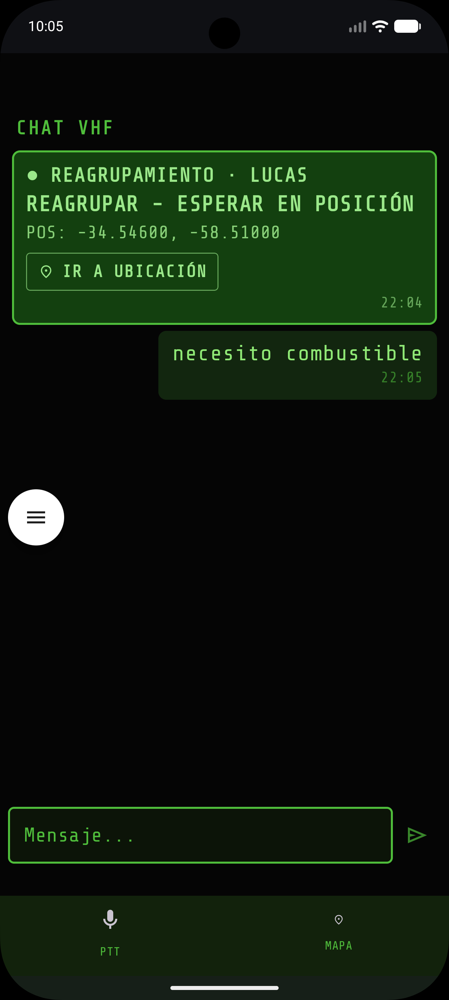
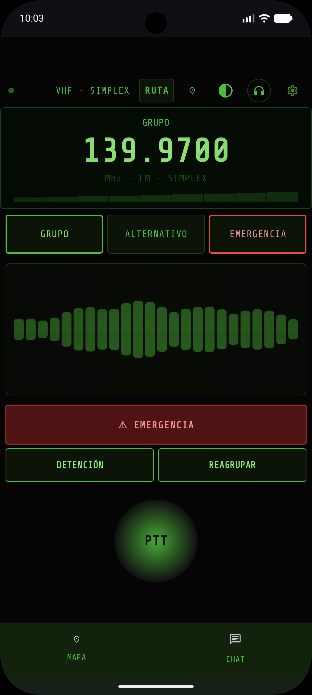
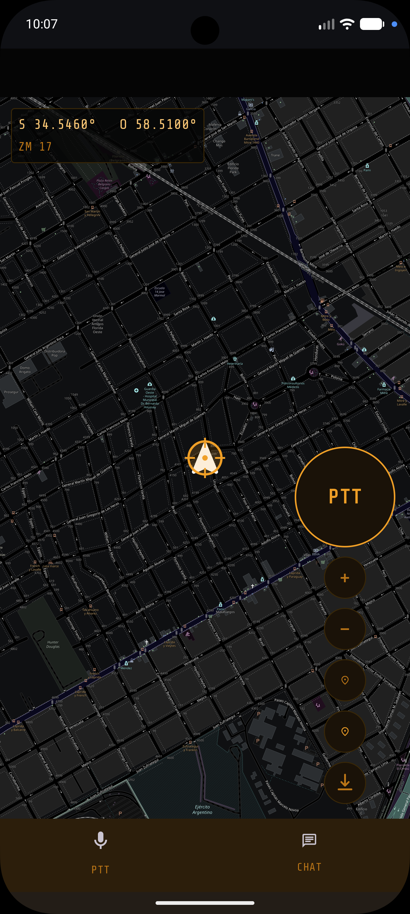
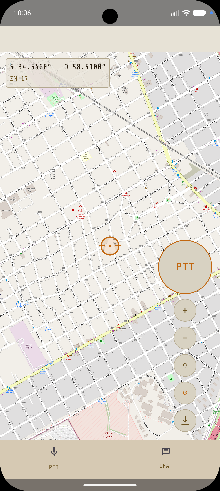

Radio VHF + app Android. Coordiná tu grupo donde no hay señal — motos, 4×4, trekking, campo. Sin celular, sin internet, sin licencia.
Motos, 4×4, senderismo, trabajo en campo — en todos los casos, el problema es el mismo: sin cobertura, no hay comunicación. Baqueano lo resuelve.
Conectás el Baqueano a la batería de 12V de tu moto o 4×4. Se enciende en segundos. No hay configuración. Ya está en el canal grupal.
La app Android detecta la red WiFi del dispositivo y se conecta. Ves el mapa offline con todos los integrantes del grupo en tiempo real.
Presionás el botón PTT en el manillar. Todos en el grupo te escuchan por radio VHF. Sin datos, sin cobertura, sin latencia. Voz real.
Aunque alguien se quede atrás o tome otra ruta, lo ves en el mapa. Nadie se pierde. Los alias identifican a cada uno al instante.
Chat de coordinación real



¿Cómo hacés si hay otro grupo de motos usando la misma frecuencia? Activás el modo grupo privado: cada grupo elige un tono de identificación y los radios solo abren el audio cuando reconocen el propio. Mismo canal, distintos grupos, sin cruzarse.
Cada transmisión lleva un tono inaudible de identificación. Si no coincide con el de tu grupo, el radio permanece en silencio — aunque la señal esté llegando. Sin interferencias, sin confusión, sin escuchar a desconocidos.
En un enduro con 200 motos, en una caravana de tres equipos distintos, o coordinando personal en una estancia grande: cada grupo elige su tono y opera de forma independiente en la misma frecuencia. Sin hardware extra, sin configuración compleja.
No necesitás entender la tecnología para usarlo — pero si querés, acá está.
El módulo SA818-V en el dispositivo hace el trabajo de radio real: transmite audio por VHF a los otros equipos del grupo. Potencia 1–5W, alcance de kilómetros.
Un microcontrolador ESP32 traduce la señal de radio a audio digital y la manda por su propia red WiFi local. Sin internet. Tu celular se conecta a esa red.
La app Android recibe el audio, muestra el mapa offline con los integrantes del grupo y te da el botón PTT. Voz, mapa y control en una pantalla.
Res. 5/2015 — ENACOM. Tres canales VHF habilitados para grupos vehiculares en Argentina. Sin gestión de espectro, sin habilitaciones individuales.
Un solo kit. Cuatro escenarios donde la cobertura celular no llega y la comunicación no puede fallar.
La unidad va bajo el asiento o en el portaequipajes, alimentada de la batería de 12V. El PTT externo se instala en el manillar: hablás sin soltar el puño. El grupo se ve en el mapa en tiempo real.
Montaje en consola o bajo tablero. Antena exterior por pigtail SMA al techo o toldo. Todos los pasajeros escuchan por el teléfono. Perfecto para caravanas largas donde los vehículos se separan.
El dispositivo va en la mochila alimentado por powerbank USB-C. La app en el celular muestra dónde está cada integrante del grupo. Coordinación real en sierra, montaña o selva sin señal.
Coordinación entre personal disperso en campo, estancia o zona agrícola sin cobertura. Montado en el vehículo o fijo en un punto con alimentación 12V. Alcance de kilómetros sin infraestructura.
Cuando el grupo se dispersa o algo sale mal, la voz no alcanza. Baqueano tiene tres acciones de un toque que mandan tu posición GPS exacta a todos — sin hablar, sin dictar coordenadas, sin margen de error.

Presionás el botón rojo en la pantalla PTT y todos los integrantes reciben tus coordenadas GPS exactas en el chat VHF. Cualquiera puede tocar IR A UBICACIÓN y la navegación los lleva hasta vos — aunque estés en campo abierto sin señal.
Si tenés que parar — pinchazo, problema en el motor, lo que sea — un toque avisa al grupo dónde estás y que estás esperando. Nadie sigue sin saber que te quedaste atrás.
Compartís un punto de reagrupamiento con un toque. Todos lo ven en el mapa y la app los navega hasta ahí. Sin coordenadas verbales, sin confusión de nombres de lugares.
No. Opera en los canales VHF definidos por la Res. 5/2015 del MTTT para grupos vehiculares. Son de uso libre. El dispositivo no puede salirse de esos canales.
Sí, para eso está. El dispositivo crea su propia red WiFi local. Tu teléfono se conecta directamente a él. Sin internet, sin cobertura, sin datos móviles.
Ilimitados. Cada vehículo tiene su Baqueano. Todos se comunican por radio VHF. En la app ves a todos los que estén en el mismo canal con sus posiciones en el mapa.
Escucha y habla por radio igual — si tiene un handy VHF en la misma frecuencia. El mapa solo funciona para quienes tienen el kit completo con la app.
No. Los mapas OSM se descargan desde la app antes de salir (con WiFi o datos). Una vez descargados, funcionan completamente offline en campo.
Sí. El dispositivo se alimenta por USB-C (funciona con cualquier powerbank). En mochila o mochila lateral, da comunicación grupal en sierra, montaña, estancia o campo sin necesidad de vehículo ni cobertura.
Primera tanda de producción. Te avisamos cuando haya stock — sin spam, solo cuando haya algo real para contarte.
Te avisamos cuando tengamos unidades disponibles. Gracias por el aguante.
Sin spam · Podés darte de baja cuando quieras